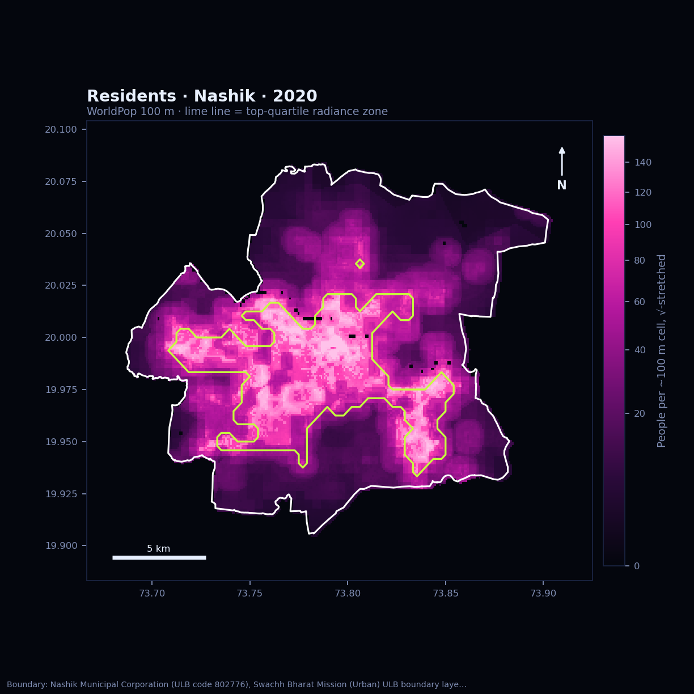
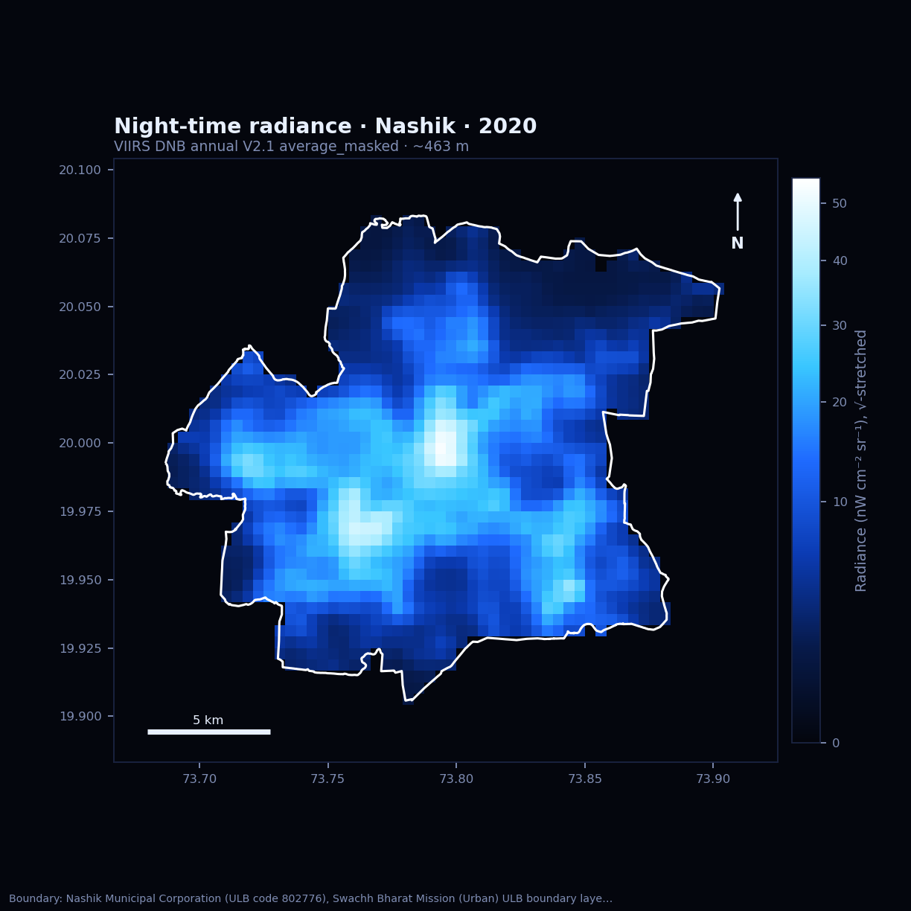
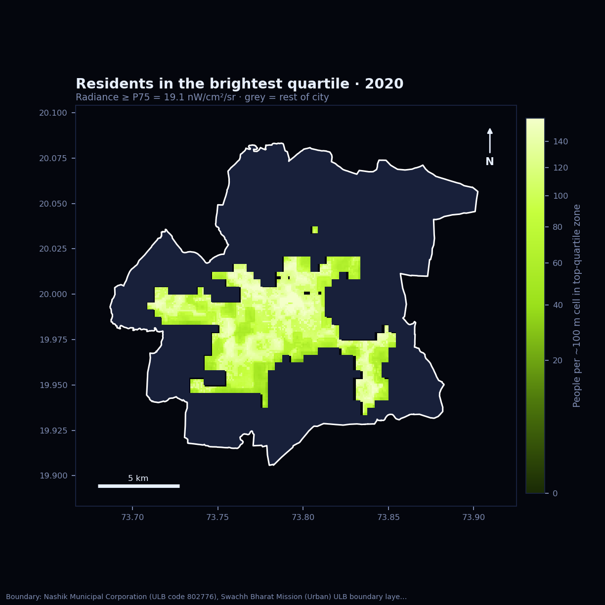
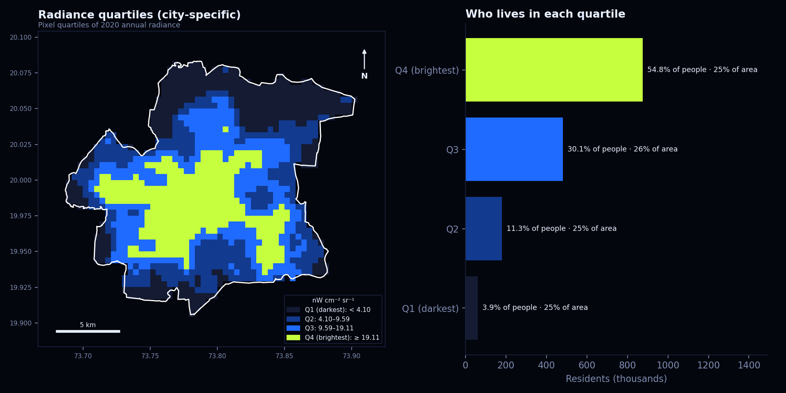

assets/results.json. Run the notebook first, and view this page through a web server (GitHub Pages, or python -m http.server inside site/).(question 2 — a satellite's-eye night census of Nashik)
2020 VIIRS night-time radiance meets WorldPop's 100 m population grid. The top quartile of lit ground covers — of the city but holds — of its residents.
(three numbers · tap a card to flip it)
The P75 radiance — Nashik's own bar for "relatively high". Above it: — km² of glowing ground.
flip ↻Every VIIRS pixel (~463 m) inside the boundary is ranked by its 2020 annual radiance. The top 25% become the bright zone.
Residents inside the Nashik Municipal Corporation boundary in 2020, summed from 100 m WorldPop cells.
flip ↻WorldPop spreads census totals onto a ~100 m grid using settlement and land-cover clues. It is an estimate, not a door-to-door count.
Residents living where radiance is in the top quartile — — of the city.
flip ↻This counts residents in areas with relatively high satellite-observed radiance. It is not anyone's personal or ground-level light exposure.
(01 · time slider)
Every 2020 month on a single fixed scale (0–— nW cm⁻² sr⁻¹, square-root stretch). Dark-blue cells had no cloud-free overpass that month — missing data, not a blackout. Hit play.
Brightest usable month — — · dimmest — — · cloudiest — with — of pixels unobserved.
(02 · drag it)
Same extent, same boundary. Left: 2020 annual radiance. Right: residents per ~100 m cell, with the top-quartile radiance zone traced in lime.


(03 · zoom in)
Toggle layers and zoom to street level to see which neighbourhoods fall inside the brightest quartile. Layers are pre-rendered from the analysis, so the page never depends on live Earth Engine tiles.
(04 · the headcount)
"Relatively high" = VIIRS pixels inside the boundary at or above the city's 75th percentile (— nW cm⁻² sr⁻¹). That zone masks the 100 m population grid and residents are summed.

— of — residents
live on — km² — — of the city's — km². Density there is ≈ —× the average of the other quartiles.
| Quartile | Radiance | Residents | Share | km² |
|---|

(05 · the story)
Light is concentrated, not spread evenly. The brightest quartile forms a contiguous core around the old city and the commercial spine along the Mumbai–Agra highway corridor, with separate bright patches over the Satpur and Ambad industrial estates in the west and around Nashik Road in the east.
The darkest quartile sits on the municipal fringe, where farmland, vineyards and open land still fall inside the corporation limit.
The top quartile covers — of the area but holds — of residents, because the bright core is also the densest housing.
Industrial estates are the exception: very bright, few residents. They lift the threshold without adding many people to the count.
Month to month the bright core stays put; what moves is data. — lost — of pixels to cloud, consistent with the June–September monsoon, so those months shouldn't be read as real dimming.
Usable monthly means ran from — (—) to — (—). The COVID-19 lockdown from late March may also have dimmed commercial lighting in spring.
— people — — of Nashik — reside in areas with relatively high satellite-observed night-time radiance.
VIIRS pixels are ~463 m, so one pixel blends many streets, roofs and plots. Light also blooms past its source, pulling dark edges into a brighter class.
Each ~100 m WorldPop cell takes the class of the VIIRS pixel it falls in (nearest neighbour), so cells along zone edges can be misassigned.
Monthly composites need cloud-free overpasses; monsoon months lose large parts of the city. That's why the quartile rule uses the annual composite.
Industrial estates, highways and floodlit sites glow with few residents; dense but poorly lit settlements can look darker than their population suggests.
WorldPop is a model that uses covariates including night lights, so the two inputs aren't fully independent, and the total won't match a census exactly.
A different ULB outline shifts the edges, the P75 bar and the totals. A city with a large dark fringe also gets a lower P75. Source stated below.
(06 · under the hood)
All processing runs in Google Earth Engine through the Python API and geemap. Figures and the animation come from the same arrays, so scales match everywhere.
City outline → GeoDataFrame, dissolved, area in UTM 43N, converted to ee.Geometry.
NOAA/VIIRS/DNB/ANNUAL_V21 · average_masked; monthly VCMSLCFG with cf_cvg ≥ 1.
WorldPop/GP/100m/pop, country IND, year 2020.
P25/P50/P75 of annual radiance over in-city VIIRS pixels; zone = radiance ≥ P75.
Population summed city-wide and inside the zone at WorldPop's native 100 m grid; grouped per quartile.
Boundary. —
Data. VIIRS Day/Night Band night-time lights (Earth Observation Group, Colorado School of Mines) via the Earth Engine catalog; WorldPop Global High Resolution Population Denominators, University of Southampton. Generated —.